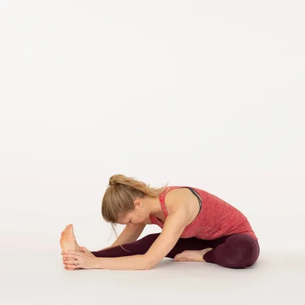

"OLD AGE"
1. It's important to remember that mental code but it's not inevitable. With the right support, lifestyle choices, and coping strategies, many seniors can enjoy a good quality of life and mental well-being in their later years.
2. Managing and reducing old age mental stress involves various strategies:-
3. Regular exercise, a balanced diet, and adequate sleep can help improve mental and emotional well-being.
4. Practices such as meditation and deep breathing can help reduce stress and anxiety.
5. Ensure that seniors have a support network of friends and family members who can provide emotional support.
Some videos may include:-
Simple Workouts for Senior Citizens
Living Fully, Dying Gracefully | Sadhguru
एक मधुर धुन, मन की शांति के लिए
श्रीमद भगवद् गीता सार 30 मिनट में
Best anti-aging drink /Health Tips
Plan Your Dailly Routine
Posture for old age people:-
